The imagemagick’s magick (convert) program provides a great command line tool for editing images. Doing a simple bulk edition can be frustrating as there are many unuseful resources for this program. I made this page to keep examples of most useful commands I needed, found, and used. It is written in a way so that when read sequentially you should get a reasonable idea how to use this tool.
Throughout this post I will use a quite complex picture of a knight from AoE II ↗.
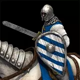
Each example lists the source pistures first and result pictures next for comparison.
Converting between formats
Converting is very simple. Note that the first argument is source and the last argument is the result.
convert knight.webp knight.png
convert knight.webp knight.bmp
convert knight.webp knight.jpg
Resizing
Exact stretching Match one dimension and scale the picture Scale by the given percentage
convert knight.png -resize 120x80\! knight_wide.png
convert knight.png -resize x80 knight_small.png
convert knight.png -resize 40% knight_smaller.png


Cropping
The coordinates for cropping are given as <width>x<height>+<x offset>+<y offset>.
convert knight.png -crop 120x60+0+20 knight_cropped.png
convert knight.jpg -fill none -stroke white -draw "rectangle 0,20 120,80" knight_crop_outline.png
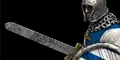 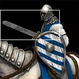
Mirroring (Flipping) and rotating
convert knight.png -flip knight_flip.png
convert knight.png -flop knight_flop.png
convert knight.png -rotate 90 knight_rotate_90.png
convert knight.png -background none -rotate 25 knight_rotate_25.png
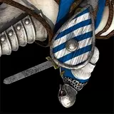 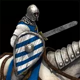 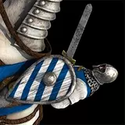 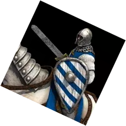
Distortion
Blur
Blur ↗ with <radius>x<sigma>, 0 radius is unlimited.
Small radius restricts the blur to some radius; leads to artifacts.
convert knight.png -blur 0x1 knight_blur_0_1.png
convert knight.png -blur 0x10 knight_blur_0_10.png
convert knight.png -blur 2x10 knight_blur_2_10.png
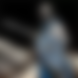
Sharpen
convert knight_blur_0_1.png -sharpen 0x1 knight_sharpen_0_1.png
convert knight_blur_0_3.png -sharpen 0x3 knight_sharpen_0_3.png
Recoloring
Note that the colors can be written in formats: blue, #0000ff.
Recolor black-white to green-gold
convert knight.png +level-colors green,gold knight_green_gold.png
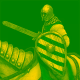
Split/Swap/Combine color channels
Splitting via -separate creates a picture for each channel in the buffer.
Hence, the following command generates three pictures named knight_channels-0.png, knight_channels-1.png, and knight_channels-2.png.
convert knight.png -channel RGB -separate knight_channels.png
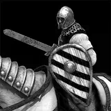 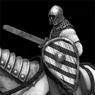 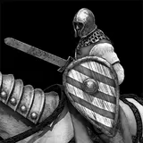
Ramp up contrast
convert knight.png -contrast knight_contrast.png
convert knight.png -sigmoidal-contrast 10,50% knight_contrast_sig.png
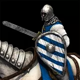 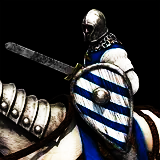
Alpha
Create transparent background in a picture with monotone colored background
convert knight.png -fuzz 7% -fill none -draw "matte 0,0 floodfill" knight_background_alpha.png
 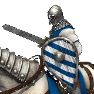
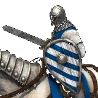
Composition
todo